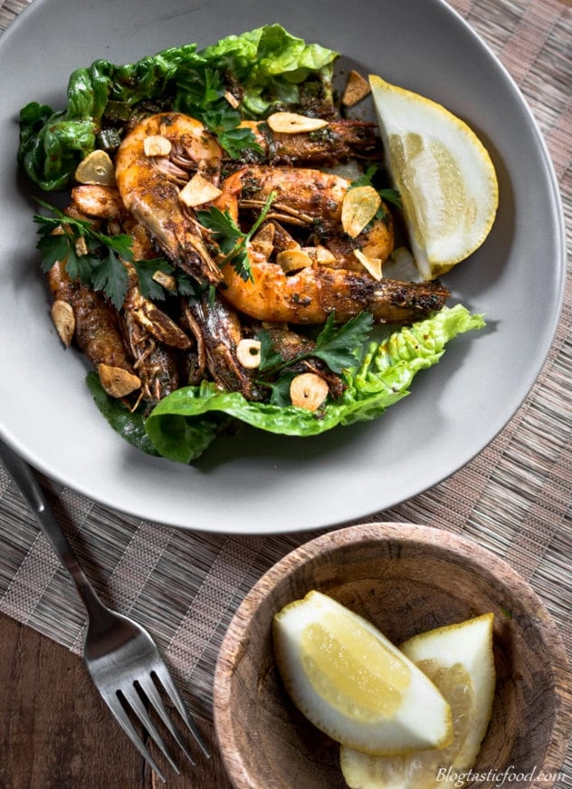
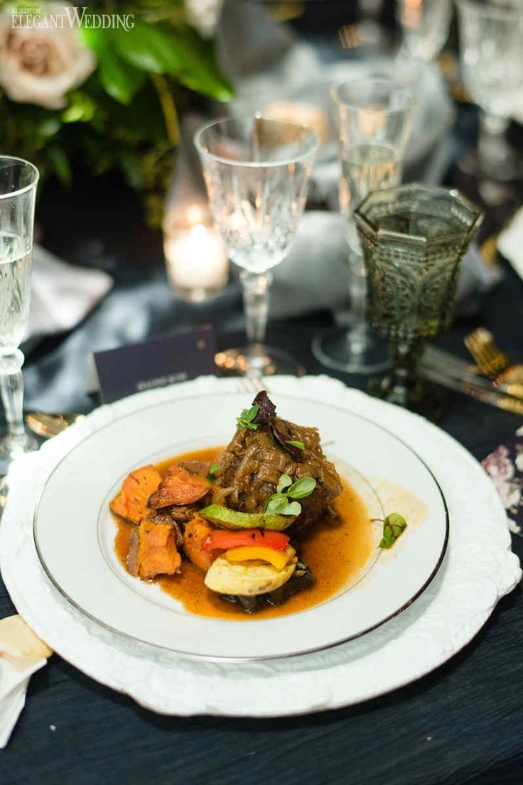

<!-- TODO Make Image Carousel
Change the home page to be a image carousel with
a few brief descriptions
-->

<div class="container">

  <main class="content-body">

    <p>Salt and Ginger Twisted Food offers catering services for any types of events indoor and outdoor.  We offer a variety of twisted foods that will blow your mind. </p>

    <div class="image-container">
      <div id="carousel" class="carousel slide" data-ride="carousel">
        <ol class="carousel-indicators">
          <li data-target="#carousel" data-slide-to="0" class="active"></li>
          <li data-target="#carousel" data-slide-to="1"></li>
          <li data-target="#carousel" data-slide-to="2"></li>
        </ol>
        <div class="carousel-inner">
          <div class="carousel-item active">
            
            <div class="carousel-caption d-none d-md-block">
              <h2>First</h2>
              <p>First Slide</p>
            </div>
          </div>
          <div class="carousel-item">
            
            <div class="carousel-caption d-none d-md-block">
              <h2>Second</h2>
              <p>Second Slide</p>
            </div>
          </div>
          <div class="carousel-item">
            
            <div class="carousel-caption d-none d-md-block">
              <h2>Third</h2>
              <p>Third Slide</p>
            </div>
          </div>
        </div>
        <a class="carousel-control-prev" href="#carousel" role="button" data-slide="prev">
          <span class="carousel-control-prev-icon" aria-hidden="true"></span>
          <span class="sr-only">Previous</span>
        </a>
        <a class="carousel-control-next" href="#carousel" role="button" data-slide="next">
          <span class="carousel-control-next-icon" aria-hidden="true"></span>
          <span class="sr-only">Next</span>
        </a>
      </div>
    </div>
  </main>

</div>